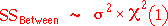
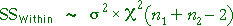
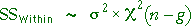
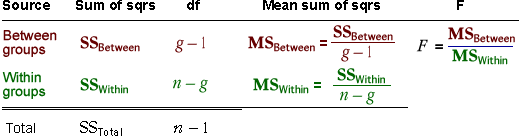
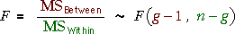

Distribution of between-group sum of squares
In the two-group model, when the null hypothesis holds (the group means are equal), the between-group sum of squares has a chi-squared distribution with 1 degree of freedom. This result generalises to models with g groups:

SSBetween is said to have (g - 1) degrees of freedom.
When the alternative hypothesis holds (at least two group means are different), the between-group sum of squares tends to be bigger — its distribution has a bigger mean.
| Mean of distn of SSBetween | |
|---|---|
| H0: all population means equal | (g - 1) σ2 |
| HA: at least two group means are different | > (g - 1) σ2 |
Large values of SSBetween therefore suggest that the alternative hypothesis is true.
Distribution of within-group sum of squares
In the two-group model, the within-group sum of squares has a chi-squared distribution whether or not the null hypothesis holds,

For the g-group model, this generalises to:

where the total number of observations in all groups is denoted by n. SSWithin is therefore said to have (n - g) degrees of freedom.
Simulation of the between-group sum of squares
The diagram below generates sample data from a g-group normal model in which the null hypothesis holds — all groups have the same distribution with mean 10 and standard deviation 1.
The bottom of the diagram shows the theoretical chi-squared distribution of the explained sum of squares. Use the pop-up menus to change the number of groups and the sample size in each group. Observe that:
Click Take sample several times for any combination of number of groups and sample size per group to build up the sampling distribution and verify that the theory is indeed true.
(When there are g = 2 groups, the diagram cuts off a sizeable part of the chi-squared distribution near zero — the peak is much higher than it appears in the diagram.)
F ratio
The anova table's F ratio is found as shown below.

If H0 is true (all groups have the same mean), the F ratio will have an F distribution,

Since the distribution of the F ratio involves no unknown parameters, it can be used as a test statistic — we can look up tables of the F distribution to assess whether it is unusually high.
Simulation: distribution of F ratio when H0 is true
The diagram below generates samples from a 4-group normal model in which the null hypothesis holds — all groups have normal distributions with the same mean.
Click Another Data Set several times to build up the sampling distribution of the F ratio. Observe that it matches the theoretical F distribution reasonably well.
Use the pop-up menu to adjust the sample size within each group. Observe that the tails of the distribution become shorter when the sample size within each group increases — the denominator of the F ratio is the pooled estimate of σ2 and this estimate becomes less variable (more accurate) with large sample sizes.
The next simulation demonstrates the how the p-value for the anova test is calculated and the properties of the p-value.
Calculating the p-value
The diagram below again takes samples from a 4-group normal model. Initially the null hypothesis holds — all group means are equal.
Click Take sample several times and observe how the p-value is obtained as the blue upper tail area of the F distribution. Observe also that:
Use the pop-up menu to adjust the sample size within each group and repeat. Although the degrees of freedom within groups and the shape of the F distribution change a little, the p-values have the same properties.
Finally, use the slider to change the underlying group means (so the alternative hypothesis now holds). When the alternative hypothesis holds, observe that:
A p-value near zero therefore provides evidence that the underlying group means are not all equal.